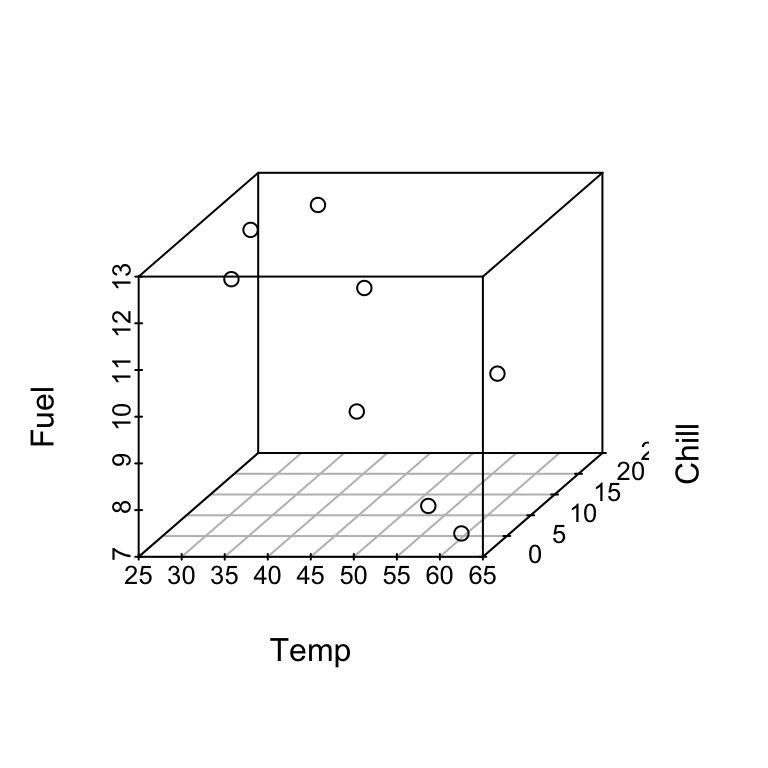
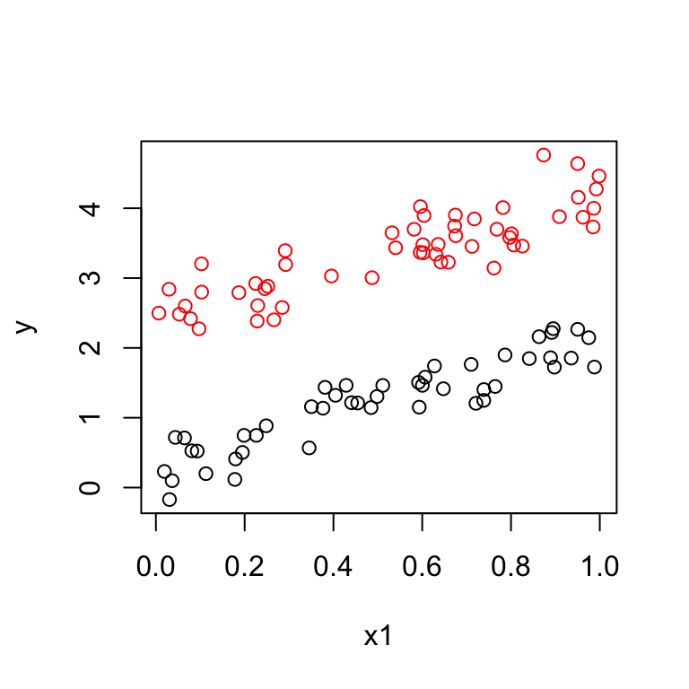
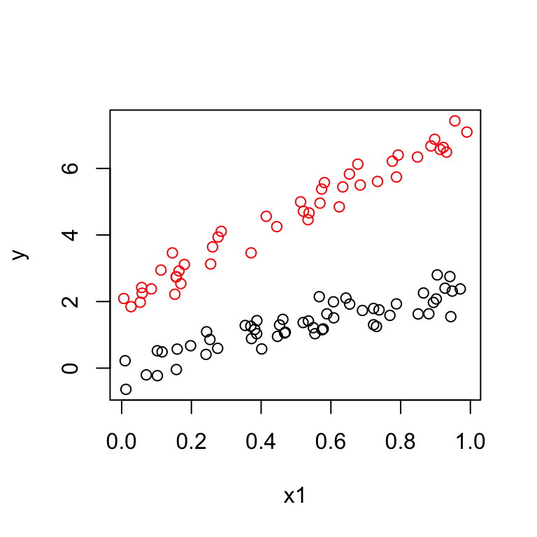
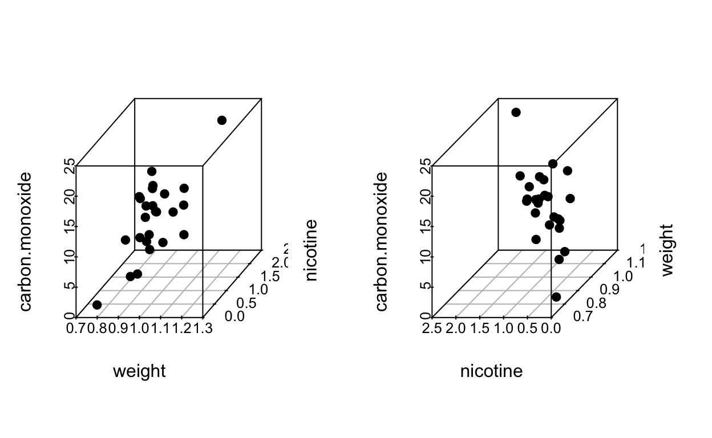

4 Multiple regression
4.1 Introductory examples
Setup: response variable \(y\), predictors \(x_1\), \(x_2\), …, \(x_k\).
4.1.1 Example 1: Fuel Use
Example from Section 2. Information was recorded on fuel usage and average temperature (\(^oF\)) over the course of one week for eight office complexes of similar size. Data are from Bowerman and Schafer (1990).
\(y\) = fuel use,
\(x_1\) = temperature,
\(x_2\) = chill index.
Data:
| Temp | Fuel | Chill |
|---|---|---|
| 28.0 | 12.4 | 18 |
| 28.0 | 11.7 | 14 |
| 32.5 | 12.4 | 24 |
| 39.0 | 10.8 | 22 |
| 45.9 | 9.4 | 8 |
| 57.8 | 9.5 | 16 |
| 58.1 | 8.0 | 1 |
| 62.5 | 7.5 | 0 |
We wish to use \(x_1\) and \(x_2\) to predict \(y\). This should give more accurate predictions than either \(x_1\) or \(x_2\) alone.
A multiple linear regression model is: fuel use \(\approx\) a linear function of temperature and chill index.
More precisely:
\[y = \beta_0 + \beta_1 x_1 + \beta_2 x_2 + \epsilon.\]
As before, \(\epsilon\) is the unobserved error, \(\beta_0, \beta_1, \beta_2\) are the unknown parameters.
When \(\mathbb{E}[\epsilon ] = 0\) we have
\[\mathbb{E}[y] = \beta_0 + \beta_1 x_1 + \beta_2 x_2.\]
In SLR we can check model appropriateness by plotting \(y\) vs \(x\) and observing whether the points fall close to a line. Here we could construct a 3-d plot of \(y\), \(x_1\), \(x_2\) and points should fall close to a plane.

For a given set of values of \(x_1\) and \(x_2\), say \(x_1 = 45.9\) and \(x_2 = 8\), the model says that the mean fuel use is:
\[\mathbb{E}[y] = \beta_0 + \beta_1 \times 45.9 + \beta_2 \times 8.\]
If \(x_1 = x_2 = 0\) then \(\mathbb{E}[y] = \beta_0\), the model intercept.
To interpret \(\beta_1\) suppose \(x_1 = t\) and \(x_2 = c\). Then
\[\mathbb{E}[y]=\beta_0 + \beta_1 \times t + \beta_2 \times c.\]
Now suppose \(x_1\) increases by \(1\) and \(x_2\) stays fixed:
\[\mathbb{E}[y]=\beta_0 + \beta_1 \times (t + 1) + \beta_2 \times c.\]
Substracting these we find that \(\beta_1\) is the increase in \(\mathbb{E}[y]\) associated with 1 unit increase in \(x_1\) for a fixed \(x_2\).
I.e. two weeks having the same chill index but whose temperature differed by \(1^o\) would have a mean fuel use difference of \(\beta_1\).
4.1.2 Example 2: Categorical predictors
Suppose we wish to predict the fuel efficiency of different car types. Data are from Cryer and Miller (1991). We have data on:
\(y\) = gallons per mile (gpm),
\(x_1\) = car weight (w),
\(x_2\) = transmission type (ttype): 1 = automatic or 0 = manual.
We use the model
\[\mathbb{E}[y] = \beta_0 + \beta_1 x_1 + \beta_2 x_2.\]
\(\beta_0\) = the mean gpm for cars of weight \(w = 0\) and ttype = manual. \(\beta_1\) = change in mean gpm when weight increases by 1 for the same ttype. \(\beta_2\) = change in mean gpm when the car of the same weight is changed from manual to automatic.
The model says that:
\[\begin{align*} \mathbb{E}[y] & = \beta_0 + \beta_1 x_1 \quad \mbox{ for manual}\\ & = \beta_0 + \beta_2 + \beta_1 x_1 \quad \mbox{ for automatic.} \end{align*}\]Therefore we are fitting two lines with different intercepts but the same slope.
The data should look like:

Suppose the data look like this:

This suggests we should fit two lines with different intercepts and different slopes. We introduce a third predictor:
\[\mathbb{E}[y] = \beta_0 + \beta_1 x_1 + \beta_2 x_2 + \beta_3 x_1x_2,\]
giving:
\[\begin{align*} \mathbb{E}[y] & = \beta_0 + \beta_1 x_1 \quad \mbox{ for manual}\\ & = (\beta_0 + \beta_2) + (\beta_1 + \beta_3) x_1 \quad \mbox{ for automatic.} \end{align*}\]The term \(x_1x_2\) is called an interaction term.
Here:
\(\beta_2\) = difference in intercept
\(\beta_3\) = difference in slope.
4.1.3 Example 3: Polynomials
We have one predictor \(x\) but the plot of \(y\) vs \(x\) exhibits a quadratic pattern.
 Then we can fit a multiple regression model:
Then we can fit a multiple regression model:
\[\mathbb{E}[y] = \beta_0 + \beta_1 x + \beta_2 x^2.\]
This is also called a quadratic regression model or, more generally, a polynomial regression model.
Higher order polynomial regression models can also be used if needed.
You must enable Javascript to view this page properly.
4.1.4 Example 4: Nonlinear relationships
For example,
\[y = \alpha x_1 ^{\beta x_2} \epsilon.\]
Nonlinear models can sometimes be linearized, for example:
\[log(y) = log(\alpha) + \beta x_2 log(x_1) + log(\epsilon).\]
Here: \(x = x_2 log(x_1)\).
NOTE: the term linear refers to the linearity of regression parameters.
A general form for multiple linear regression model (with two explanatory variables):
\[y = \beta_0 f_0(x_1, x_2) + \beta_1 f_1(x_1, x_2) + \beta_2 f_2(x_1, x_2) + \dots\]
where \(f_j(x_1, x_2)\) are known functions of explanatory variables.
The extension to more than two explanatory variables is straightforward.
4.1.5 Cigarette Data continued
Data from 3.7.4. Consider a second predictor (weight):

Regression (nicotine only)
summary(fit)##
## Call:
## lm(formula = carbon.monoxide ~ nicotine)
##
## Residuals:
## Min 1Q Median 3Q Max
## -3.3273 -1.2228 0.2304 1.2700 3.9357
##
## Coefficients:
## Estimate Std. Error t value Pr(>|t|)
## (Intercept) 1.6647 0.9936 1.675 0.107
## nicotine 12.3954 1.0542 11.759 3.31e-11 ***
## ---
## Signif. codes: 0 '***' 0.001 '**' 0.01 '*' 0.05 '.' 0.1 ' ' 1
##
## Residual standard error: 1.828 on 23 degrees of freedom
## Multiple R-squared: 0.8574, Adjusted R-squared: 0.8512
## F-statistic: 138.3 on 1 and 23 DF, p-value: 3.312e-11Regression (weight only)
summary(fit2)##
## Call:
## lm(formula = carbon.monoxide ~ weight)
##
## Residuals:
## Min 1Q Median 3Q Max
## -6.524 -2.533 0.622 2.842 7.268
##
## Coefficients:
## Estimate Std. Error t value Pr(>|t|)
## (Intercept) -11.795 9.722 -1.213 0.2373
## weight 25.068 9.980 2.512 0.0195 *
## ---
## Signif. codes: 0 '***' 0.001 '**' 0.01 '*' 0.05 '.' 0.1 ' ' 1
##
## Residual standard error: 4.289 on 23 degrees of freedom
## Multiple R-squared: 0.2153, Adjusted R-squared: 0.1811
## F-statistic: 6.309 on 1 and 23 DF, p-value: 0.01948

Regression (both predictors)
fit3 <- lm(carbon.monoxide ~ weight + nicotine)
summary(fit3)##
## Call:
## lm(formula = carbon.monoxide ~ weight + nicotine)
##
## Residuals:
## Min 1Q Median 3Q Max
## -3.3304 -1.2249 0.2314 1.2677 3.9371
##
## Coefficients:
## Estimate Std. Error t value Pr(>|t|)
## (Intercept) 1.61398 4.44663 0.363 0.720
## weight 0.05883 5.02395 0.012 0.991
## nicotine 12.38812 1.24473 9.952 1.32e-09 ***
## ---
## Signif. codes: 0 '***' 0.001 '**' 0.01 '*' 0.05 '.' 0.1 ' ' 1
##
## Residual standard error: 1.87 on 22 degrees of freedom
## Multiple R-squared: 0.8574, Adjusted R-squared: 0.8444
## F-statistic: 66.13 on 2 and 22 DF, p-value: 4.966e-10Regression (quadratic)
nicotine.sq <- nicotine^2
fit4 <- lm(carbon.monoxide ~ nicotine + nicotine.sq)
summary(fit4)##
## Call:
## lm(formula = carbon.monoxide ~ nicotine + nicotine.sq)
##
## Residuals:
## Min 1Q Median 3Q Max
## -2.9857 -1.1052 0.1834 0.8654 3.4145
##
## Coefficients:
## Estimate Std. Error t value Pr(>|t|)
## (Intercept) -1.784 1.453 -1.227 0.23264
## nicotine 20.111 2.775 7.248 2.92e-07 ***
## nicotine.sq -3.730 1.267 -2.945 0.00749 **
## ---
## Signif. codes: 0 '***' 0.001 '**' 0.01 '*' 0.05 '.' 0.1 ' ' 1
##
## Residual standard error: 1.583 on 22 degrees of freedom
## Multiple R-squared: 0.8977, Adjusted R-squared: 0.8884
## F-statistic: 96.53 on 2 and 22 DF, p-value: 1.284e-11
4.2 Least squares estimation for multiple regression
Our model states that:
\[y = \beta_0 + \beta_1x_{1} + \beta_2x_{2} + ... + \beta_kx_k + \epsilon,\]
where \(k<n\).
For each observation we have:
\[y_i = \beta_0 + \beta_1x_{i1} + \beta_2x_{i2} + ... + \beta_kx_{ik} + \epsilon_i.\]
We can write this more compactly using matrix notation.
Let \(\mathbf{Y}\) be the response vector:
\[\mathbf{Y} =\begin{bmatrix} y_{1} \\ y_{2} \\ \vdots\\ y_{n} \end{bmatrix}\]
Let \(\mathbf{X}\) be the \(n \times p\) matrix, where \(p = k+1\):
\[\mathbf{X} = \begin{bmatrix} 1 & x_{11} & x_{12} & x_{13} & \dots & x_{1k} \\ 1 & x_{21} & x_{22} & x_{23} & \dots & x_{2k} \\ \vdots & \vdots & \vdots & \vdots & \ddots & \vdots \\ 1 & x_{n1} & x_{n2} & x_{n3} & \dots & x_{nk} \end{bmatrix}\]
Let \(\boldsymbol{\beta}\) be the \(p\)-dim parameter vector:
\[\boldsymbol{\beta} =\begin{bmatrix} \beta_{0} \\ \beta_{1} \\ \vdots\\ \beta_{k} \end{bmatrix}\]
Let \(\boldsymbol{\epsilon}\) be the \(n\)-dim error vector:
\[\boldsymbol{\epsilon} =\begin{bmatrix} \epsilon_{1} \\ \epsilon_{2} \\ \vdots\\ \epsilon_{n} \end{bmatrix}\]
The model states that:
\[\mathbf{Y}=\mathbf{X}\boldsymbol{\beta} + \boldsymbol{\epsilon}.\]
The vector of fitted values is:
\[\hat{\mathbf{Y}}=\mathbf{X}\hat{\boldsymbol{\beta}}.\]
The corresponding residual values are:
\[\mathbf{e}=\mathbf{Y}-\hat{\mathbf{Y}}.\]
The OLS estimates minimise:
\[S(\boldsymbol{\beta}) = \sum_{i=1}^{n}(y_i-\beta_0-\beta_1x_{i1}- ... - \beta_kx_{ik})^2\]
over \(\boldsymbol{\beta}\).
Therefore the OLS estimates satisfy:
\[\frac{\delta S(\boldsymbol{\beta})}{\delta \beta_j} = 0, \quad \forall j\]
and as before we evaluate at \(\hat{\boldsymbol{\beta}}\)
\[\frac{\delta S(\boldsymbol{\beta})}{\delta \beta_0} = -2 \sum_{i=1}^{n}(y_i-\beta_0-\beta_1x_{i1}- ... - \beta_kx_{ik})\]
\[\frac{\delta S(\boldsymbol{\beta})}{\delta \beta_j} = -2 \sum_{i=1}^{n} x_{ij}(y_i-\beta_0-\beta_1x_{i1}- ... - \beta_kx_{ik}), \quad \forall j = 1,...,k.\]
The OLS estimates of \(\boldsymbol{\beta}\) satisfy:
\[\sum_{i=1}^{n}(y_i-\hat{\beta}_0-\hat{\beta}_1x_{i1}- ... - \hat{\beta}_kx_{ik}) = 0\]
and
\[\sum_{i=1}^{n}(y_i-\hat{\beta}_0-\hat{\beta}_1x_{i1}- ... - \hat{\beta}_kx_{ik})x_{ij} = 0, \quad \forall j = 1,...,k.\]
These normal equations (see (3.1) and (3.2)) can be written as:
\[\sum_{i=1}^{n}e_i = 0\]
and
\[\sum_{i=1}^{n}x_{ij}e_i = 0, \quad \forall j = 1,...,k.\]
We can combine this into one matrix equation:
\[\mathbf{X}^T\mathbf{e}= \mathbf{0}\]
or equivalently:
\[\mathbf{X}^T(\mathbf{Y} - \mathbf{X}\hat{\boldsymbol{\beta}})= \mathbf{0}\]
Therefore the OLS estimator \(\hat{\boldsymbol{\beta}}\) satisfies:
\[\begin{align} \mathbf{X}^T\mathbf{X}\hat{\boldsymbol{\beta}} &= \mathbf{X}^T\mathbf{Y}\\ \hat{\boldsymbol{\beta}} &= (\mathbf{X}^T\mathbf{X})^{-1} \mathbf{X}^T\mathbf{Y}.\tag{4.1} \end{align}\]Matrix \(\mathbf{X}^T\mathbf{X}\) is non-singular (i.e has an inverse) iff \(rank(\mathbf{X}) =p\), i.e. \(\mathbf{X}\) has full rank and the columns of \(\mathbf{X}\) are linearly independent.
4.2.1 Estimation of \(\sigma^2\) = Var\((\epsilon)\)
A point estimate of \(\sigma^2\) is the mean squared error:
\[\hat{\sigma}^2 = \mbox{MSE} = \frac{\mbox{SSE}}{n-p} = \frac{\sum_{i=1}^n e_i^2}{n-p}.\]
4.2.2 Estimation of Var\((\hat{\beta})\)
\[\mbox{Var}(\hat{\boldsymbol{\beta}}) = (\mathbf{X}^T\mathbf{X})^{-1} \sigma^2.\]
\[\widehat{\mbox{Var}(\hat{\boldsymbol{\beta}})} = (\mathbf{X}^T\mathbf{X})^{-1} \hat{\sigma}^2.\]
4.3 Prediction from multiple linear regression model
As we have seen already, to predict from a multiple regression model we use:
\[\hat{y}_i = \hat{\beta}_0+ \hat{\beta}_1x_{i1}+ \cdots+\hat{\beta}_kx_{ik}\]
or \[\hat{\mathbf{Y}} = \mathbf{X}\hat{\boldsymbol{\beta}}\]
At a particular set of \(x_0\) values we predict the response \(y_0\) by:
\[\hat{y}_0 = \mathbf{x}_0^T\hat{\boldsymbol{\beta}}\]
where \(\mathbf{x}_0^T = ( 1, x_{01},x_{02},..., x_{0k})\).
We also use \(\hat{y}_0\) to estimate \(\mathbb{E}(y_0)\), the mean of \(y_0\) at a given set of \(x_0\) values.
The \(\mbox{S.E.}\) for the estimate of the mean \(\mathbb{E}(y_0)\) is:
\[\mbox{S.E.}_{\mbox{fit}} (\hat{y}_0)= \hat{\sigma}\sqrt{\mathbf{x}_0^T(\mathbf{X}^T\mathbf{X})^{-1}\mathbf{x}_0}.\]
A \(1-\alpha\) confidence interval for the expected response at \(\mathbf{x}_0\) is given by:
\[\hat{y}_0 \pm t_{n-p}(\alpha/2) \times \mbox{S.E.}_{\mbox{fit}} (\hat{y}_0).\]
The \(\mbox{S.E.}\) for the predicted \(y_0\):
\[\mbox{S.E.}_{\mbox{pred}}(\hat{y}_0) = \hat{\sigma}\sqrt{1+ \mathbf{x}_0^T(\mathbf{X}^T\mathbf{X})^{-1}\mathbf{x}_0}.\]
Note: \[\mbox{S.E.}_{\mbox{pred}}(\hat{y}_0)= \sqrt{\hat{\sigma}^2+\mbox{S.E.}_{\mbox{fit}}(\hat{y}_0)^2}\]
4.4 Regression models in matrix notation: examples
4.4.1 Example 1: SLR
The \(\mathbf{X}\) matrix is:
\[\mathbf{X} = \begin{bmatrix} 1 & x_{1}\\ \vdots & \vdots\\ 1 &x_{n} \end{bmatrix}\]
To estimate the coefficients \(\hat{\boldsymbol{\beta}}\):
\[\begin{align*} \mathbf{X}^T\mathbf{X} &= \begin{bmatrix} n & \sum x_{i}\\ \sum x_{i}& \sum x_{i}^2 \end{bmatrix}\\ (\mathbf{X}^T\mathbf{X})^{-1} & = \frac{1}{n \sum x_{i}^2 - (\sum x_{i})^2}\begin{bmatrix} \sum x_{i}^2& -\sum x_{i}\\ -\sum x_{i} & n \end{bmatrix} \\ & = \frac{1}{n (\sum x_{i}^2 - n\bar{x}^2)}\begin{bmatrix} \sum x_{i}^2 & -n\bar{x} \\ -n\bar{x} & n \end{bmatrix} \\ & = \frac{1}{S_{xx}}\begin{bmatrix} \sum x_{i}^2/n & -\bar{x} \\ -\bar{x} & 1 \end{bmatrix} \\ \mathbf{X}^T\mathbf{Y} &= \begin{bmatrix} \sum y_{i} \\ \sum x_{i}y_{i} \end{bmatrix} = \begin{bmatrix} n\bar{y} \\ \sum x_{i}y_{i} \end{bmatrix}\\ \hat{\boldsymbol{\beta}} & = (\mathbf{X}^T\mathbf{X})^{-1}\mathbf{X}^T\mathbf{Y} \\ & = \frac{1}{S_{xx}}\begin{bmatrix} \bar{y}\sum x_{i}^2 -\bar{x} \sum x_{i}y_i \\ -n \bar{x} \bar{y} + \sum x_{i}y_i \end{bmatrix} \end{align*}\]With some algebra, this gives:
\[\hat{\beta}_1 = \frac{S_{xy}}{S_{xx}}\] and
\[\hat{\beta}_0= \bar{y} - \hat{\beta}_1\bar{x}\]
as before, and
\[\begin{align*} \mbox{Var}(\hat{\boldsymbol{\beta}})& = (\mathbf{X}^T\mathbf{X})^{-1}\sigma^2\\ & = \frac{\sigma^2}{S_{xx}} \begin{bmatrix} \sum x_{i}^2/n& -\bar{x} \\ -\bar{x}& 1 \end{bmatrix} \end{align*}\]which gives
\[\mbox{Var}(\hat{\beta}_0) = \sigma^2\left(\frac{1}{n}+ \frac{\bar{x}^2}{S_{xx}}\right),\]
\[\mbox{Var}(\hat{\beta}_1) = \frac{\sigma^2}{S_{xx}},\]
\[\mbox{Cov}(\hat{\beta}_0, \hat{\beta}_1) = -\bar{x}\frac{\sigma^2}{S_{xx}}.\]
4.4.2 Example 2
Example from Stapleton (2009), Problem 3.1.1, pg 81.
A scale has 2 pans. The measurement given by the scale is the difference between the weight in pan 1 and pan 2, plus a random error \(\epsilon\).
Suppose that \(\mathbb{E}[\epsilon] = 0\) and \(\mbox{Var}(\epsilon) = \sigma^2\) and the \(\epsilon_i\) are independent.
Suppose also that two objects have weight \(\beta_1\) and \(\beta_2\) and that 4 measurements are taken:
- Pan 1: object 1, Pan 2: empty
- Pan 1: empty, Pan 2: object 2
- Pan 1: object 1, Pan 2: object 2
- Pan 1: object 1 and 2, Pan 2: empty
Let \(y_1\), \(y_2\), \(y_3\) and \(y_4\) be the four observations. Then:
\[\begin{align*} y_1 & = \beta_1 + \epsilon_1\\ y_2 & =- \beta_2 + \epsilon_2\\ y_3 & = \beta_1 - \beta_2 + \epsilon_3\\ y_4 & = \beta_1 + \beta_2 + \epsilon_4\\ \end{align*}\]\(\mathbf{X} = \begin{bmatrix} 1 &0 \\ 0 & -1 \\ 1 & -1 \\ 1 & 1 \end{bmatrix}\)
\(\mathbf{Y} = \begin{bmatrix} y_1 \\ y_2 \\ y_3 \\ y_4 \end{bmatrix}\)
\(\boldsymbol{\beta} = \begin{bmatrix} \beta_1 \\ \beta_2 \end{bmatrix}\)
\(\boldsymbol{\epsilon} = \begin{bmatrix} \epsilon_1 \\ \epsilon_2 \\ \epsilon_3 \\ \epsilon_4 \end{bmatrix}\)
The model is:
\[\mathbf{Y} = \begin{bmatrix} 1 &0 \\ 0 & -1 \\ 1 & -1 \\ 1 & 1 \end{bmatrix} \times\begin{bmatrix} \beta_1 \\ \beta_2 \end{bmatrix} + \boldsymbol{\epsilon} = \mathbf{X}\boldsymbol{\beta} + \boldsymbol{\epsilon}\]
The OLS estimates of \(\boldsymbol{\beta}\) are given by:
\[\hat{\boldsymbol{\beta}} = (\mathbf{X}^T\mathbf{X})^{-1} \mathbf{X}^T\mathbf{Y}.\]
\[\begin{align*} \mathbf{X}^T\mathbf{X} & = \begin{bmatrix} 1 & 0 & 1 & 1\\ 0 & -1 & -1 & 1\\ \end{bmatrix} \begin{bmatrix} 1 & 0 \\ 0 & -1 \\ 1 & -1 \\ 1 & 1\\ \end{bmatrix}\\ & = \begin{bmatrix} 3 & 0 \\ 0 & 3 \\ \end{bmatrix}\\ & = 3\begin{bmatrix} 1 & 0 \\ 0 & 1 \\ \end{bmatrix}\\ \mathbf{X}^T\mathbf{Y} &= \begin{bmatrix} y_1 + y_3 + y_4\\ -y_2 - y_3 + y_4\\ \end{bmatrix}\\ \hat{\boldsymbol{\beta}} & = (\mathbf{X}^T\mathbf{X})^{-1} \mathbf{X}^T\mathbf{Y}\\ & = \frac{1}{3}\begin{bmatrix} 1 & 0 \\ 0 & 1 \\ \end{bmatrix} \begin{bmatrix} y_1 + y_3 + y_4\\ -y_2 - y_3 + y_4\\ \end{bmatrix}\\ & = \frac{1}{3}\begin{bmatrix} y_1 + y_3 + y_4\\ -y_2 - y_3 + y_4\\ \end{bmatrix}\\ \mbox{Var}(\hat{\boldsymbol{\beta}}) &= (\mathbf{X}^T\mathbf{X})^{-1} \sigma^2 = \frac{1}{3}\begin{bmatrix} 1 & 0 \\ 0 & 1 \\ \end{bmatrix} \sigma^2.\\ \end{align*}\]Can we improve the experiment so that the 4 measurements yield estimates of \(\boldsymbol{\beta}\) with smaller variance?
present design: \(\mbox{Var}(\hat{\beta}_i) = \frac{\sigma^2}{3}\)
Let \(\mathbf{X} = \begin{bmatrix} 1 & -1 \\ 1 & -1 \\ 1 & 1 \\ 1 & 1 \end{bmatrix}\),
\(\mbox{Var}(\hat{\beta}_i) = \frac{\sigma^2}{4}\)
- Let \(\mathbf{X} = \begin{bmatrix} 1 & 0 \\ 1 & 0 \\ 0 & 1 \\ 0 & 1 \end{bmatrix}\),
\(\mbox{Var}(\hat{\beta}_i) = \frac{\sigma^2}{2}\).
4.5 The formal multiple regression model and properties
4.5.1 Concepts: random vectors, covariance matrix, multivariate normal distribution (MVN).
Let \(Y_1,...,Y_n\) be r.v.s defined on a common probability space.
Then \(\mathbf{Y}\) is a random vector.
Let \(\mu_i = \mathbb{E}[y_i]\) and \(\boldsymbol{\mu} = \begin{bmatrix} \mu_1 \\ \vdots \\ \mu_n \end{bmatrix}\).
Then \(\boldsymbol{\mu}\) is a mean vector and we write:
\[\mathbb{E}[\mathbf{Y}] = \boldsymbol{\mu}.\]
Let \(\sigma_{ij} = Cov(y_i, y_j)\). Then \(\boldsymbol{\Sigma}\) is the covariance matrix of \(\mathbf{Y}\), where \(\boldsymbol{\Sigma}_{ij} = [\sigma_{ij}].\)
We write:
\[\mbox{Var}(\mathbf{Y}) = \boldsymbol{\Sigma}.\]
Aside:
\(\mbox{Cov}(Y_i,Y_j) = \mathbb{E}[(Y_i-\mathbb{E}[Y_i])(Y_j-\mathbb{E}[Y_j])]\)
\(\mbox{Cov}(Y_i,Y_i) = \mbox{Var}(Y_i)\)
If \(Y_i,Y_j\) are independent then \(\mbox{Cov}(Y_i,Y_j) = 0\).
When \(Y_i,Y_j\) have bivariate normal distribution, if \(\mbox{Cov}(Y_i,Y_j) = 0\), then \(Y_i,Y_j\) are independent.
Fact: Suppose \(\mathbf{Y}\) has mean \(\boldsymbol{\mu}\) and variance \(\boldsymbol{\Sigma}\). Then for a vector of constants \(\mathbf{b}\) and matrix of constants \(\mathbf{C}\):
\[\mathbb{E}[\mathbf{C}\mathbf{Y} + \mathbf{b}] = \mathbf{C}\boldsymbol{\mu} + \mathbf{b}\]
and
\[\mbox{Var}( \mathbf{C}\mathbf{Y} + \mathbf{b} ) = \mathbf{C}\boldsymbol{\Sigma} \mathbf{C}^T.\]
Defn: A random \(n\) - dim vector \(\mathbf{Y}\) is said to have a MVN distribution if \(\mathbf{Y}\) can be written as \[\mathbf{Y} = \mathbf{A}\mathbf{Z} + \boldsymbol{\mu}\] where:
\(Z_1, Z_2, ..., Z_p\) are iid N(0,1),
\(\mathbf{A}\) is an \(n \times p\) matrix of constants and
\(\boldsymbol{\mu}\) is an \(n\) vector of constants.
Notes:
Random vector \(\mathbf{Z}\) is multivariate normal with mean \(\mathbf{0}\) and covariance \(\mathbf{I}_p\) since \(Z_i\)s are independent so their covariances are 0. We write: \[\mathbf{Z} \sim N_p(\mathbf{0}, \mathbf{I}_p).\]
\(\mathbb{E}[\mathbf{Y}] = \mathbb{E}[\mathbf{A}\mathbf{Z} + \boldsymbol{\mu}] = \boldsymbol{\mu}\),
\(\mbox{Var}(\mathbf{Y}) = \mathbf{A}\mathbf{A}^T\),
\(\mathbf{Y} \sim N_n (\boldsymbol{\mu}, \mathbf{A}\mathbf{A}^T)\).
4.5.2 Multiple regression model
\[\mathbf{Y}=\mathbf{X}\boldsymbol{\beta} + \boldsymbol{\epsilon}.\]
\(\mathbf{Y}=\) \(n\) - dimensional response random vector.
\(\boldsymbol{\beta}=\) unknown \(p\) - dimensional parameter vector.
\(\mathbf{X}=\) an \(n \times p\) matrix of constants.
\(\boldsymbol{\epsilon}=\) \(n\) - dimensional error vector.
Assumptions:
Linearity: \(\mathbb{E}[\boldsymbol{\epsilon} ] =\mathbf{0}\), hence \(\mathbb{E}[\mathbf{Y}] = \mathbf{X}\boldsymbol{\beta}\).
Constant variance and 0 covariances \(\mbox{Var}(\boldsymbol{\epsilon}) = \sigma^2 I_n\) and \(\mbox{Var}(\mathbf{Y}) = \sigma^2 I_n\).
MVN distribution: \(\boldsymbol{\epsilon} \sim N_n(\mathbf{0},\sigma^2 I_n )\) and \(\mathbf{Y} \sim N_n(\mathbf{X}\boldsymbol{\beta},\sigma^2 I_n )\)
Notes: When the off diagonal entries of the covariance matrix of a MVN distribution are 0, the \(Y_1, ..., Y_n\) are independent.
Theorem 4.1 Let \(\hat{\boldsymbol{\beta}}\) be the OLS estimator of \(\boldsymbol{\beta}\). When the model assumptions hold:
\[\hat{\boldsymbol{\beta}} \sim N_p(\boldsymbol{\beta}, (\mathbf{X}^T\mathbf{X})^{-1}\sigma^2)\]Corollary: \(\hat{\beta}_j \sim N(\beta_j, c_{jj}\sigma^2)\), where \(c_{jj}\) is the \(jj\) entry of \((\mathbf{X}^T\mathbf{X})^{-1}\) for \(j = 0, ..., k\).
Theorem 4.2 Let \(\hat{\sigma}^2 = \frac{\mbox{SSE}}{n-p}\). When the model assumptions hold:
\[(n-p)\frac{\hat{\sigma}^2}{\sigma^2} \sim \chi ^2_{(n-p)}\]and
\[\mathbb{E}[\hat{\sigma}^2] =\sigma^2\]
The distribution of \(\hat{\sigma}^2\) is independent of \(\hat{\boldsymbol{\beta}}\).
Corollary:
\[\frac{\hat{\beta}_j - \beta_j }{\hat{\sigma} \sqrt{c_{jj}}} \sim t_{n-p}\] So we can do tests and obtain CIs for \(\beta_j\)
4.6 The hat matrix
The vector of fitted values:
\[\hat{\mathbf{Y}} = \mathbf{X}\hat{\boldsymbol{\beta}} = \mathbf{X}(\mathbf{X}^T\mathbf{X})^{-1} \mathbf{X}^T \mathbf{Y} = \mathbf{H}\mathbf{Y}.\]
The hat matrix (also known as the projection matrix):
\[\mathbf{H} = \mathbf{X}(\mathbf{X}^T\mathbf{X})^{-1} \mathbf{X}^T\]
has dimension \(n \times n\) is symmetric (\(\mathbf{H}^T = \mathbf{H}\)) and is idempotent (\(\mathbf{H}^2 = \mathbf{H}\mathbf{H} = \mathbf{H}\)).
We have
\[\hat{\mathbf{Y}}= \mathbf{H}\mathbf{Y}\]
\[\mathbf{e}= \mathbf{Y} - \hat{\mathbf{Y}} =\mathbf{Y} - \mathbf{H}\mathbf{Y} = (\mathbf{I} - \mathbf{H})\mathbf{Y}\]
\[\mbox{SSE} = \mathbf{e}^T\mathbf{e} = \mathbf{Y}^T (\mathbf{I} - \mathbf{H})\mathbf{Y}\]
4.6.1 The QR Decomposition of a matrix
We have seen that OLS estimates for \(\boldsymbol{\beta}\) can be found by using:
\[\hat{\boldsymbol{\beta}} = (\mathbf{X}^T\mathbf{X})^{-1} \mathbf{X}^T\mathbf{Y}.\]
Inverting the \(\mathbf{X}^T\mathbf{X}\) matrix can sometimes introduce significant rounding errors into the calculations and most software packages use QR decomposition of the design matrix \(\mathbf{X}\) to compute the parameter estimates. E.g. take a look at the documentation for the lm method in R.
How does this work?
We need to find an \(n \times p\) matrix \(\mathbf{Q}\) and a \(p \times p\) matrix \(\mathbf{R}\) such that:
\[\mathbf{X}=\mathbf{Q}\mathbf{R}\]
and
\(\mathbf{Q}\) has orthonormal columns, i.e. \(\mathbf{Q}^T\mathbf{Q} = \mathbf{I}_p\)
\(\mathbf{R}\) is an upper triangular matrix.
There are several methods for computing the \(\mathbf{Q}\mathbf{R}\) factorization (we won’t study them, but high quality code for the computation exists in publicly available Lapack package {http://www.netlib.org/lapack/lug/}).
We can show that:
\[\begin{align*} \mathbf{X} &=\mathbf{Q}\mathbf{R} \\ \mathbf{X}^T\mathbf{X} &=(\mathbf{Q}\mathbf{R})^T(\mathbf{Q}\mathbf{R}) = \mathbf{R}^T\mathbf{R}\\ \end{align*}\]Then:
\[\begin{align*} (\mathbf{X}^T\mathbf{X})\hat{\boldsymbol{\beta}} & =\mathbf{X}^T\mathbf{Y}\\ (\mathbf{R}^T\mathbf{R})\hat{\boldsymbol{\beta}} & =\mathbf{R}^T\mathbf{Q}^T\mathbf{Y}\\ \mathbf{R}\hat{\boldsymbol{\beta}} & = \mathbf{Q}^T\mathbf{Y}\\ \end{align*}\]Since \(\mathbf{R}\) is a triangular matrix we can use backsolving and this is an easy equation to solve.
We can also show that the hat matrix becomes:
\[\mathbf{H} = \mathbf{Q}\mathbf{Q}^T\]
4.7 ANOVA for multiple regression
Recap: ANOVA decomposition
\[\begin{align*} \mbox{SSR} & = \sum_{i=1}^n(\hat{y}_i - \bar{y})^2 = \sum_{i=1}^n \hat{y}_i ^2- n\bar{y}^2 \\ \mbox{SSE} & = \sum_{i=1}^n(y_i - \hat{y}_i)^2 = \sum_{i=1}^n e_i^2\\ \mbox{SST} & = \sum_{i=1}^n(y_i - \bar{y})^2 = \sum_{i=1}^n y_i ^2- n\bar{y}^2 \\ \end{align*}\]Proof: this follows from the decomposition of response = fit + residual.
\[\begin{align*} \mathbf{Y} & = \hat{\mathbf{Y}} + \mathbf{e}\\ \mathbf{Y}^T\mathbf{Y} & = (\hat{\mathbf{Y}} + \mathbf{e})^T (\hat{\mathbf{Y}} + \mathbf{e})\\ & = \hat{\mathbf{Y}}^T\hat{\mathbf{Y}} + \mathbf{e}^T\mathbf{e}+ 2\hat{\mathbf{Y}}^T\mathbf{e} \\ \end{align*}\]But \(\hat{\mathbf{Y}}^T = \hat{\boldsymbol{\beta}}^T\mathbf{X}^T\) and \(\mathbf{X}^T\mathbf{e} = 0\), from normal equations, so \(\hat{\mathbf{Y}}^T\mathbf{e} = 0\).
Alternatively: \(\hat{\mathbf{Y}} = \mathbf{H}\mathbf{Y}\), \(\mathbf{e} = (\mathbf{I} - \mathbf{H})\mathbf{Y}\), so \(\hat{\mathbf{Y}}^T\mathbf{e} = \mathbf{Y}^T\mathbf{H}(\mathbf{I} - \mathbf{H})\mathbf{Y} = 0\), since \(\mathbf{H}^2=\mathbf{H}\).
Therefore,
\[\mathbf{Y}^T\mathbf{Y} = \hat{\mathbf{Y}}^T\hat{\mathbf{Y}} + \mathbf{e}^T\mathbf{e}\]
\[\sum_{i=1}^n y_i^2 =\sum_{i=1}^n \hat{y}_i^2 + \sum_{i=1}^n e_i^2\]
and substracting \(n\bar{y}^2\) from both sides completes the proof.
ANOVA table:
\[\begin{align*} \mbox{SSR} & = \sum_{i=1}^n(\hat{y}_i - \bar{y})^2, \;\;\;\; df =p-1 \\ \mbox{SSE} & = \sum_{i=1}^n(y_i - \hat{y}_i)^2, \;\;\;\; df = n-p \\ \mbox{SST} & = \sum_{i=1}^n(y_i - \bar{y})^2, \;\;\;\; df =n-1. \end{align*}\]| SOURCE | df | SS | MS | F |
|---|---|---|---|---|
| Regression | p-1 | SSR | MSR = SSR/(p-1) | MSR/MSE |
| Error | n-p | SSE | MSE = SSE/(n-p) | |
| Total | n-1 | SST |
If \(\beta_1 = \beta_2 = ... = \beta_k = 0\) then \(\hat{\beta}_j \approx 0\) for \(j = 1,...,k\) and \(\hat{y}_i \approx \bar{y}\).
Then, \(\mbox{SSE} \approx \mbox{SST}\) and \(\mbox{SSR} \approx 0\). Small values of \(\mbox{SSR}\) relative to \(\mbox{SSE}\) provide indication that \(\beta_1 = \beta_2 = ... = \beta_k = 0\).
\[\begin{align*} &H_0: \beta_1 = \beta_2 = ... = \beta_k = 0\\ &H_A: \mbox{ not all }\beta_j = 0 \mbox{ for }j = 1,...,k \end{align*}\]Under \(H_0\):
\[F= \frac{\mbox{SSR}/(p-1)}{\mbox{SSE}/(n-p)} \sim F_{(p-1, n-p)}\]
P-value is \(P( F_{(p-1, n-p)} \geq F_{obs})\), where \(F_{obs}\) is the observed \(F\)-value.
Coefficient of determination \(R^2 = \frac{\mbox{SSR}}{\mbox{SST}}\), \(0 \leq R^2 \leq 1\).
\(R^2\) is the proportion of variability in \(Y\) explained by regression on \(X_1,...,X_k\).
Adjusted \(R^2\) is the modified version of \(R^2\) adjusted for the number of predictors in the model. R uses:
\[R^2_{Adj} = 1-(1- R^2)\frac{n-1}{n-p-1}.\]
4.8 1-way ANOVA model
4.8.1 Example:
A study was carried out to examine the effects of caffeine. Thirty students were randomly assigned to one of:
- control, no caffeine
- low dose caffeine
- low dose caffeine plus sugar
The response \(y\) is an index measuring unrest 2 hrs later.
(Example from Draper and Smith (1966).)
Let \(y_{ij}\) be the response for the \(j^{th}\) person in the \(i^{th}\) group, \(j=1,...,10\), \(i=1,2,3\).
Let \(n_i\) be the number assigned to group \(i\).
Model:
- \(y_{ij} = \mu_{i} + \epsilon_{ij}\), \(\quad\) \(\epsilon_{ij}\) iid \(N(0, \sigma^2)\), where \(\mu_i\) is the population mean for those at dose \(i\).
Or equivalently:
- \(y_{ij} = \mu + \alpha_{i} + \epsilon_{ij}\), \(\quad\) \(\epsilon_{ij}\) iid \(N(0, \sigma^2)\), where \(\mu\) is the overall population mean and \(\alpha_i\) is the effect of receiving treatment \(i\).
O.L.S estimates for Model 1 are:
\[\begin{align*} S(\mu_1, ..., \mu_g)& =\sum_{i=1}^g\sum_{j=1}^{n_i}\epsilon_{ij}^2 = \sum_{i=1}^g\sum_{j=1}^{n_i}(y_{ij}-\mu_i)^2,\\ \frac{\delta S(\mu_1, ..., \mu_g)}{\delta \mu_i}& = -2\sum_{j=1}^{n_i}(y_{ij}-\mu_i), \quad \forall i = 1,...,g \\ \end{align*}\]Setting these equal to 0 and evaluating at \(\hat{\mu}_i\) gives:
\[\begin{align*} \sum_{j=1}^{n_i}(y_{ij}-\hat{\mu}_i) & =0.\\ \sum_{j=1}^{n_i}y_{ij}-n_i\hat{\mu}_i & =0.\\ \hat{\mu}_i =\sum_{j=1}^{n_i}y_{ij}/n_i & =\bar{y}_{i.}\\ \end{align*}\]NOTE: \(\bar{y}_{i.}\) is the average of responses at level \(i\) of \(X\).
Model 1 has \(g=3\) parameters but model 2 has 4 parameters and is over-parameterised (\(\mu_i = \mu + \alpha_{i}\)).
Usually the constraint \(\sum \alpha_i = 0\) or \(\alpha_3 = 0\) is imposed.
The hypothesis of interest in this model is:
\[\begin{align*} & H_0: \mu_1=\mu_2 = ...= \mu_g\\ & H_A: \mbox{not all } \mu_i \mbox{ are the same.}\\ \end{align*}\]Equivalently:
\[\begin{align*} & H_0: \alpha_i=0, \hspace{1cm}\forall i = 1,...,g\\ & H_A: \mbox{not all } \alpha_i = 0.\\ \end{align*}\]Calculations can be summarised in the ANOVA table:
| SOURCE | df | SS | MS | F |
|---|---|---|---|---|
| Group | g-1 | SSG | MSG = SSG/(g-1) | MSG/MSE |
| Error | n-g | SSE | MSE = SSE/(n-g) | |
| Total | n-1 | SST |
where:
\(\mbox{SSG} = \sum_{i = 1}^gn_{i}(\bar{y}_{i.} - \bar{y}_{..})^{2}\)
\(\mbox{SSE} = \sum_{i=1}^g\sum_{j = 1}^{n_i}(y_{ij} - \bar{y}_{i.})^{2}\)
\(\mbox{SST} = \sum_{i=1}^g\sum_{j = 1}^{n_i}(y_{ij} - \bar{y}_{..})^{2}\)
Under \(H_{0}\): \[F_{obs} = \frac{\mbox{MSG}}{\mbox{MSE}} \sim F_{g-1, n-g}.\]
We reject \(H_{0}\) for large values of \(F_{obs}\).
4.9 One way ANOVA in regression notation
First we have to set up dummy variables:
\[X_i= \{ \begin{array}{ll} 1 & \quad\mbox{if observation in gp }i\\ 0 & \quad\mbox{ow}\end{array}\]
Model: (effects model \(y_{ij} = \mu + \alpha_{i} + \epsilon_{ij}\))
\[Y = \mu + \alpha_1X_1 + \alpha_2X_2 + \alpha_3X_3 + \epsilon\]
\[\mathbf{Y} = \mathbf{X}\boldsymbol{\beta} + \boldsymbol{\epsilon}\]
where \(\mathbf{Y}\) is a \(30 \times 1\) vector of responses and
\[\boldsymbol{\beta} = \begin{bmatrix} \mu \\ \alpha_{1} \\ \alpha_{2} \\ \alpha_{3} \end{bmatrix} \quad \quad \quad \mathbf{X} = \begin{bmatrix} 1 & 1 & 0 & 0 \\ \vdots & \vdots & \vdots & \vdots \\ 1 & 1 & 0 & 0 \\ 1 & 0 & 1 & 0 \\ \vdots & \vdots & \vdots & \vdots \\ 1 & 0 & 1 & 0 \\ 1 & 0 & 0 & 1 \\ \vdots & \vdots & \vdots & \vdots \\ 1 & 0 & 0 & 1 \end{bmatrix}\]
Note that in the \(\mathbf{X}\) matrix the first column equals the sum of the second, third and fourth columns, therefore it is not of full rank so \(\mathbf{X}^T\mathbf{X}\) does not have an inverse and there is not unique \(\hat{\boldsymbol{\beta}}\).
We could require \(\sum\alpha_i = 0\) and then the solution would be unique. Or, we could require that \(\alpha_3 = 0\) and drop the last column of \(\mathbf{X}\).
We could also derive a solution where the first column of \(\mathbf{X}\) is omitted. Then the model becomes:
\[Y = \mu_1X_1 + \mu_2X_2 + \mu_3X_3 + \epsilon\]
\[\mathbf{Y} = \mathbf{X}\boldsymbol{\beta} + \boldsymbol{\epsilon}\]
where
\[\boldsymbol{\beta} =\begin{bmatrix} \mu_{1} \\ \mu_{2}\\ \mu_{3} \end{bmatrix}\quad \quad \quad \mathbf{X} = \begin{bmatrix} 1 & 0 & 0 \\ \vdots & \vdots & \vdots \\ 1 & 0 & 0 \\ 0 & 1 & 0 \\ \vdots & \vdots & \vdots \\ 0 & 1 & 0 \\ 0 & 0 & 1 \\ \vdots & \vdots & \vdots \\ 0 & 0 & 1 \end{bmatrix}\]
This is the means model \(y_{ij} = \mu_i + \epsilon_{ij}\).
\[\begin{align*} \hat{\boldsymbol{\beta}} & = (\mathbf{X}^T\mathbf{X})^{-1}\mathbf{X}^T\mathbf{Y}\\ & = \begin{bmatrix} 10 & 0 & 0 \\ 0 & 10 & 0 \\ 0 & 0 & 10 \end{bmatrix}^{-1}\begin{bmatrix} \sum_{j=1}^{10} y_{1j} \\ \sum_{j=1}^{10} y_{2j}\\ \sum_{j=1}^{10} y_{3j} \end{bmatrix}\\ & = \frac{1}{10}\mathbf{I}_3\begin{bmatrix} y_{1.} \\ y_{2.}\\ y_{3.} \end{bmatrix}\\ & = \begin{bmatrix} \bar{y}_{1.} \\ \bar{y}_{2.}\\ \bar{y}_{3.} \end{bmatrix}\\ & = \begin{bmatrix} \hat{\mu}_{1} \\ \hat{\mu}_{2}\\ \hat{\mu}_{3} \end{bmatrix} \end{align*}\]The fitted values are then:
\[\hat{Y} = \hat{\mu}_1X_1 + \hat{\mu}_2X_2 + \hat{\mu}_3X_3\]
or
\[\hat{Y} = \hat{\mu}_i = \bar{y}_{i.}\]
if \(Y\) comes from group \(i\).
4.9.1 Fitting the model in MTB and R
One way anova, \(Y\) is response \(X\) is group.
Using regression, make dummy variables \(X_1\), \(X_2\), \(X_3\) and:
- use predictors \(X_1\), \(X_2\), \(X_3\) with no intercept, or
- use predictors \(X_1\), \(X_2\) with intercept.
The second regression on dummy variables gives the same ANOVA table as the one way ANOVA table.
When the model does not include an intercept, the ANOVA table shows the uncorrected SS, i.e. \(\bar{y}\) not substracted:
| SOURCE | df | SS |
|---|---|---|
| Regression | p | SSR |
| Error | n-p | SSE |
| Total | n | SST |
Where \(SSR = \sum \hat{y}^2\), \(SSE = \sum(y - \hat{y})^{2}\) and \(SST = \sum y^{2}\).
4.9.1.1 Example: Caffeine in MTB
In this example x is a factor, not a continuous variable, x1, x2 and x3 are the dummy variables that identify the groups in x.

One-way ANOVA: y versus x
Analysis of Variance
Source DF Adj SS Adj MS F-Value P-Value
x 2 61.40 30.700 6.18 0.006
Error 27 134.10 4.967
Total 29 195.50
Model Summary
S R-sq R-sq(adj) R-sq(pred)
2.22860 31.41% 26.33% 15.32%
Means
x N Mean StDev 95% CI
1 10 244.800 2.394 (243.354, 246.246)
2 10 246.400 2.066 (244.954, 247.846)
3 10 248.300 2.214 (246.854, 249.746)
Pooled StDev = 2.22860
Regression Analysis: y versus x1, x2, x3
The following terms cannot be estimated and were removed:
x3
Analysis of Variance
Source DF Seq SS Seq MS F-Value P-Value
Regression 2 61.40 30.700 6.18 0.006
x1 1 43.35 43.350 8.73 0.006
x2 1 18.05 18.050 3.63 0.067
Error 27 134.10 4.967
Total 29 195.50
Model Summary
S R-sq R-sq(adj) R-sq(pred)
2.22860 31.41% 26.33% 15.32%
Coefficients
Term Coef SE Coef T-Value P-Value
Constant 248.3 0.705 352.33 0.000
x1 -3.50 0.997 -3.51 0.002
x2 -1.90 0.997 -1.91 0.067
Regression Equation
y = 248.300 - 3.500 x1 - 1.900 x2
\(X_3\) is dropped. Compare ANOVA table with the 1-way ANOVA results. It is also possible to fit the model without explicitly specifying the dummy variables, but specifing that \(x\) is a categorical variable. The same model is fitted, but \(X_1\) is dropped.
Regression Analysis: y versus x1, x2, x3
Analysis of Variance
Source DF Seq SS Seq MS F-Value P-Value
Regression 3 1822929 607643 122344.22 0.000
x1 1 599270 599270 120658.47 0.000
x2 1 607130 607130 122240.86 0.000
x3 1 616529 616529 124133.34 0.000
Error 27 134 5
Total 30 1823063
Model Summary
S R-sq R-sq(adj) R-sq(pred)
2.22860 99.99% 99.99% 99.99%
Coefficients
Term Coef SE Coef T-Value P-Value VIF
x1 244.800 0.705 347.36 0.000 1.00
x2 246.400 0.705 349.63 0.000 1.00
x3 248.300 0.705 352.33 0.000 1.00
Regression Equation
y = 244.800 x1 + 246.400 x2 + 248.300 x3
Model with intercept = 0.
4.9.1.2 Example: Caffeine in R
#Tell R this is a categorical variable
coffee.data$x <- as.factor(coffee.data$x)
fit.oneway.anova <- aov(y~x, data = coffee.data)
summary(fit.oneway.anova)## Df Sum Sq Mean Sq F value Pr(>F)
## x 2 61.4 30.700 6.181 0.00616 **
## Residuals 27 134.1 4.967
## ---
## Signif. codes: 0 '***' 0.001 '**' 0.01 '*' 0.05 '.' 0.1 ' ' 1anova(fit.oneway.anova)## Analysis of Variance Table
##
## Response: y
## Df Sum Sq Mean Sq F value Pr(>F)
## x 2 61.4 30.7000 6.1812 0.006163 **
## Residuals 27 134.1 4.9667
## ---
## Signif. codes: 0 '***' 0.001 '**' 0.01 '*' 0.05 '.' 0.1 ' ' 1model.tables(fit.oneway.anova, "means")## Tables of means
## Grand mean
##
## 246.5
##
## x
## x
## 1 2 3
## 244.8 246.4 248.3# plot(fit.oneway.anova) #diagnostic plots
coefficients(fit.oneway.anova)## (Intercept) x2 x3
## 244.8 1.6 3.5#TukeyHSD(fit.oneway.anova, "x", ordered = TRUE)
#plot(TukeyHSD(fit.oneway.anova, "x"))
fit.coffee <- lm(y~x, data = coffee.data)
summary(fit.coffee)##
## Call:
## lm(formula = y ~ x, data = coffee.data)
##
## Residuals:
## Min 1Q Median 3Q Max
## -3.400 -2.075 -0.300 1.675 3.700
##
## Coefficients:
## Estimate Std. Error t value Pr(>|t|)
## (Intercept) 244.8000 0.7047 347.359 < 2e-16 ***
## x2 1.6000 0.9967 1.605 0.12005
## x3 3.5000 0.9967 3.512 0.00158 **
## ---
## Signif. codes: 0 '***' 0.001 '**' 0.01 '*' 0.05 '.' 0.1 ' ' 1
##
## Residual standard error: 2.229 on 27 degrees of freedom
## Multiple R-squared: 0.3141, Adjusted R-squared: 0.2633
## F-statistic: 6.181 on 2 and 27 DF, p-value: 0.006163anova(fit.coffee)## Analysis of Variance Table
##
## Response: y
## Df Sum Sq Mean Sq F value Pr(>F)
## x 2 61.4 30.7000 6.1812 0.006163 **
## Residuals 27 134.1 4.9667
## ---
## Signif. codes: 0 '***' 0.001 '**' 0.01 '*' 0.05 '.' 0.1 ' ' 1# or using dummy variables
d1 <- as.numeric(coffee.data$x == 1)
d2 <- as.numeric(coffee.data$x == 2)
d3 <- as.numeric(coffee.data$x == 3)
fit.coffee.dummy <- lm(coffee.data$y ~ d1 +d2)
summary(fit.coffee.dummy)##
## Call:
## lm(formula = coffee.data$y ~ d1 + d2)
##
## Residuals:
## Min 1Q Median 3Q Max
## -3.400 -2.075 -0.300 1.675 3.700
##
## Coefficients:
## Estimate Std. Error t value Pr(>|t|)
## (Intercept) 248.3000 0.7047 352.326 < 2e-16 ***
## d1 -3.5000 0.9967 -3.512 0.00158 **
## d2 -1.9000 0.9967 -1.906 0.06730 .
## ---
## Signif. codes: 0 '***' 0.001 '**' 0.01 '*' 0.05 '.' 0.1 ' ' 1
##
## Residual standard error: 2.229 on 27 degrees of freedom
## Multiple R-squared: 0.3141, Adjusted R-squared: 0.2633
## F-statistic: 6.181 on 2 and 27 DF, p-value: 0.006163#no intercept
fit.coffee.dummy2 <- lm(coffee.data$y ~ d1 +d2 +d3 - 1)
summary(fit.coffee.dummy2)##
## Call:
## lm(formula = coffee.data$y ~ d1 + d2 + d3 - 1)
##
## Residuals:
## Min 1Q Median 3Q Max
## -3.400 -2.075 -0.300 1.675 3.700
##
## Coefficients:
## Estimate Std. Error t value Pr(>|t|)
## d1 244.8000 0.7047 347.4 <2e-16 ***
## d2 246.4000 0.7047 349.6 <2e-16 ***
## d3 248.3000 0.7047 352.3 <2e-16 ***
## ---
## Signif. codes: 0 '***' 0.001 '**' 0.01 '*' 0.05 '.' 0.1 ' ' 1
##
## Residual standard error: 2.229 on 27 degrees of freedom
## Multiple R-squared: 0.9999, Adjusted R-squared: 0.9999
## F-statistic: 1.223e+05 on 3 and 27 DF, p-value: < 2.2e-164.10 Confidence intervals and hypothesis tests for linear combinations of \(\boldsymbol{\beta}\)
From the theory of OLS:
\[\hat{\boldsymbol{\beta}} \sim N(\boldsymbol{\beta},(\mathbf{X}^T\mathbf{X})^{-1}\sigma^2)\]
and
\[\mathbf{c}^T\hat{\boldsymbol{\beta}} \sim N(\mathbf{c}^T\boldsymbol{\beta},\mathbf{c}^T(\mathbf{X}^T\mathbf{X})^{-1}\mathbf{c}\sigma^2)\]
For the caffeine example (1 way ANOVA model): suppose we want to compare the treatment means with the control mean, that is, we want a CI for:
\[\frac{\mu_2+\mu_3}{2}-\mu_1\]
Let \(\mathbf{c}^T= (-1, 1/2, 1/2)\), \(\boldsymbol{\beta}^T = (\mu_1, \mu_2, \mu_3)\).
\[\mathbf{c}^T\boldsymbol{\beta} = -\mu_1+\mu_2/2+ \mu_3/2\]
is estimated by:
\[\mathbf{c}^T\hat{\boldsymbol{\beta}} = -\bar{y}_{1.}+\bar{y}_{2.}/2+ \bar{y}_{3.}/2\]
and the variance is:
\[\begin{bmatrix} -1 & 1/2 & 1/2 \end{bmatrix} \frac{1}{10}\mathbf{I}_3 \begin{bmatrix} -1 \\ 1/2 \\ 1/2\end{bmatrix}\sigma^2 = \frac{3}{20}\sigma^2\]
So, the \(100 \times (1- \alpha) \%\)CI is:
\[\mathbf{c}^T\hat{\boldsymbol{\beta}} \pm t_{27}(\alpha/2) \sqrt{\frac{3}{20}\hat{\sigma}^2}\]
The df is: \(n-g = 30-3 = 27\).
We could also test hypotheses e.g. \(H_o: \mathbf{c}^T\boldsymbol{\beta} = 0\). The test statistic:
\[\frac{\mathbf{c}^T\hat{\boldsymbol{\beta}}}{\sqrt{\frac{3}{20}\hat{\sigma}^2}} \sim t_{27}.\]
References
Bowerman, Bruce L., and Daniel Schafer. 1990. Linear Statistical Models. 2nd ed. Thomson Wadsworth.
Cryer, J.D., and R.B. Miller. 1991. Statistics for Business: Data Analysis and Modelling. Business Statistics. PWS-Kent.
Stapleton, James H. 2009. Linear Statistical Models. 2nd ed. Wiley Series in Probability and Statistics. Wiley.
Draper, Norman Richard, and Harry Smith. 1966. Applied Regression Analysis. Wiley Series in Probability and Mathematical Statistics. Wiley.